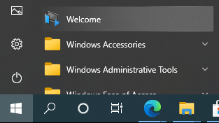
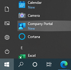
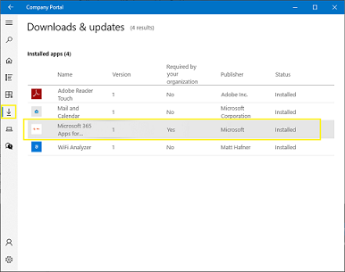

-
Welcome to your new device
The following will guide you through some of the changes to your desktop environment
If you need to view this guide again, you can find the Welcome icon in the Windows Start menu or on the desktop.
Click the arrow buttons to navigate through the guide
-
I can't find my application
If you can't find a required application on your device, try looking in the Company Portal app. Where applications are being deployed to your device by IT, they will be available for install on demand from here.
Where is Office?
If you have an Office license assigned, the Office applications will be being installed for you in the background. In the meantime you can access Office Online by clicking here.
Note that following the Office install, Microsoft Teams will only appear after a computer restart
You can monitor the Office install by opening the Company Portal app navigating to the Downloads and Updates tab on the left.
